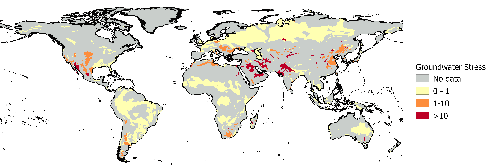

Groundwater stress is calculated as the ratio between the amount of groundwater abstracted from the aquifer and the groundwater recharge. Where this ratio is larger than one, more water is used than is replenished in an average year. This means that groundwater use is not sustainable, and groundwater levels will recede over time. The groundwater footprint data is also used by WRI’s Aqueduct Water Risk Atlas.

Groundwater stress, or the groundwater abstraction rate compared to the natural recharge rate, for a selection of aquifers divided into low (yellow), medium and high (red) risk categories.
References:
Gassert, F., Landis, M., Luck, M., Reig, P., & Shiao, T. (2013). “Aqueduct global maps 2.0.” Working Paper. Washington, DC: World Resources Institure. Available online at /publication/aqueduct-global-maps-20.
Gleeson, T., Moosdorf, N., Hartmann, J., & Van Beek, L. P. H. (2014). A glimpse beneath earth’s surface: GLobal HYdrogeology MaPS (GLHYMPS) of permeability and porosity. Geophysical Research Letters, 41(11), 3891–3898. https://doi.org/10.1002/2014GL059856